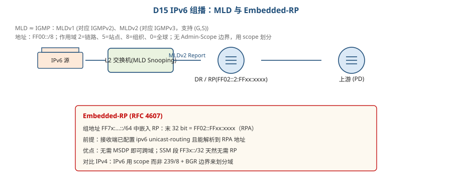

ch10 IPv6 组播（MLD / Embedded-RP / IPv6 MVPN）
来源：iPexpert Ch14（P.14-1–14-9）、Aweya Ch1.4.5（IPv6 地址与 MAC 映射）、Volume II Ch3（IPv6 MVPN, P.220–P.219） 配图：D15 IPv6 组播模型

学习目标
- 说出 IPv6 组播地址结构与作用域（scope）体系；
- 解释 MLDv1/v2 与 IGMPv1/v3 的对应关系及 MLD Snooping；
- 说清 Embedded-RP 的编码原理与它为什么"不需要 MSDP"；
- 掌握 IPv6 下的 PIM 差异与 IPv6 MVPN 的部署要点；
- 排查 IPv6 组播典型故障。
1. IPv6 组播地址
| 8 | 4 | 4 | 112 bits |
+--------+-------+-------+-------------------------------------+
| 111111 | flags | scope | Group ID |
+--------+-------+-------+-------------------------------------+
- 前缀固定
FF00::/8； - flags：T（临时地址）、P（基于前缀）、R（预留）；
- scope：
| scope | 含义 | 跨路由器 |
|---|---|---|
| 0 | 本节点 | 否 |
| 1 | 链路本地 | 否 |
| 2 | 链路本地 | 否 |
| 3 | 区域域（Realm-local） | 有限 |
| 4 | 管理域（Admin-local） | 有限（对应 IPv4 的 Admin Scope） |
| 5 | 站点本地（Site-local） | 跨域但限于站点 |
| 8 | 组织本地（Organization-local） | 跨域 |
| 14 | 全局 | 是 |
关键差异（与你的笔记一致）：IPv6 用 scope（作用域标识） 划分组播域，不再需要 IPv4 那样的边界路由器（BGR）+ Admin Scope 机制。
MAC 映射：前缀固定 33:33，取低 32 位 → 同样存在 32 路冲突（Aweya 1.4.5）。
2. MLD（Multicast Listener Discovery）
| 版本 | 对应 IPv4 | 报文 |
|---|---|---|
| MLDv1 | IGMPv2 | Listener Query（130）、Listener Report（131）、Listener Done（132） |
| MLDv2 | IGMPv3 | 支持 (G,S) 订阅、源过滤、Record Type |
- MLD 是 ICMPv6 的一个子协议（类型 130–132）；
- MLD Snooping：二层交换机监听 MLD 报文收敛组播，等价于 IGMP Snooping；
- 路由器上 MLD 与 PIM 配合：MLD 负责成员发现，PIM 负责转发。
关键对应关系（记忆点）：MLDv1 ↔ IGMPv2（都有 Leave/Done）；MLDv2 ↔ IGMPv3（都有 (G,S) 与源过滤）。
3. Embedded-RP（RFC 4607）

3.1 问题
IPv4 的 ASM 跨域需要 MSDP（交换 SA）来让远端的 RP 知道源的地址。IPv6 不想这么复杂。
3.2 解法：把 RP 地址"编码"进组地址
- 约定一组 IPv6 组播地址（如
FF7x:...::/96）专门用于 Embedded-RP； - 组地址的低 32 bit 编码为
FF02::FFxx:xxxx，其中xx:xxxx就是 RP 地址的低 32 位（RPA）； - 接收端收到组播包时，直接从组地址推导出 RP 地址，不需要任何信令。
前提：接收端能通过单播路由解析该 RPA 地址（因此 RP 必须是全局可达或至少在单播域内可达）。
3.3 收益
| 收益 | 说明 |
|---|---|
| 不需要 MSDP | IPv6 域间组播不用部署 MSDP + MBGP 组合 |
| 不需要 BSR | 无需 RP 发现机制 |
| 单一全球 RP 即可 | 与你的笔记一致："single RP within globally shared MC domains (eliminates need for MSDP)" |
3.4 SSM 段
- IPv6 的 FF3x::/32 为 SSM 段，天然无需 RP；
- 配合 MLDv2 使用。
4. IPv6 下的 PIM
- PIMv2 for IPv6（RFC 7761）：协议框架与 IPv4 相同，地址族不同；
- 地址类型变化：PIM 报文中的 Group/Source 地址从 32 位变为 128 位；
- Bootstrap Router：IPv6 也用 BSR 分发 Group→RP 映射（组播路由组
FF02::2:66）； - IPv6 Embedded RP 与 BSR 可共存。
5. IPv6 MVPN（Volume II Ch3）
- MVPN 的 IPv6 版本（RFC 6513 扩展 / Draft）支持 IPv6 组播；
- 关键点：
- PE 间用 MLDP 建 Default MDT / Data MDT；
- VPNv6 地址族与 IPv4 MVPN 并列配置；
- IPv6 组播同样受"同 VNI/同 VRF 边界"约束；
- 大规模 IPv6 域间组播通常用 SSM（FF3x::/32） 以规避 MSDP 复杂度。
6. 排障命令
show ipv6 mroute
show ipv6 mroute <group> detail
show ipv6 mld groups
show ipv6 mld groups <group>
show ipv6 mld interface
show ipv6 mld neighbor
show ipv6 igmp? (不存在，IPv6 用 mld)
show ipv6 pim neighbor
show ipv6 pim interface
show ipv6 pim rp mapping
show ip igmp snooping groups vlan 10 ! 若设备支持 IPv6 MLD snooping 用 show ipv6 mld snooping
show ipv6 mroute vrf <vrf>
debug ipv6 mld
debug ipv6 pim
7. 生产案例（6 例）
案例 10-1：IPv6 组播源收不到 MLD Report
现象：IPv6 组播不通，源发流正常；show ipv6 mld groups 为空。
定位：show ipv6 mld interface 显示接口未启用 MLD；debug ipv6 mld 无报文。
根因：接口未配置 ipv6 pim sparse-mode（PIM 启用后才启用 MLD 监听）。
处置：接口配置 ipv6 pim sparse-mode；确认主机已加入 IPv6 组（ip maddr）。
复盘：IPv6 的成员管理与 PIM 绑定，不像 IPv4 有独立开关，容易漏配。
案例 10-2：Embedded-RP 组不通
现象：使用 FF7E::... 组播地址，接收端加入后无流量；show ipv6 pim rp mapping 为空。
定位：确认组地址属于 Embedded-RP 段；检查接收端能否单播 ping 通推导出的 RPA。
根因：接收端单播不可达 RPA（推导出的 RP 地址无法解析），或组地址不在 Embedded-RP 规划段内。
处置：保证 RPA 的单播可达性（IGP 通告）；确认地址段规划正确。
复盘：Embedded-RP 的隐含前提是"单播可达"，做方案时必须把单播可达性当作显式检查项。
案例 10-3：IPv6 组播跨 AS 不通（仍想用 MSDP）
现象：IPv6 跨 AS 组播不通，团队按 IPv4 经验部署 MSDP。
定位：IPv6 场景下 MSDP 不适用；show ipv6 pim rp mapping 无学习结果。
根因：IPv6 用 Embedded-RP / SSM 替代 MSDP，部署 MSDP 是"用 IPv4 的思路解决 IPv6 的问题"。
处置：改用 Embedded-RP 或 SSM（FF3x::/32）；删除多余的 MSDP 配置。
复盘：IPv6 组播的核心简化是"去 MSDP、去 BGR"，设计时优先用 SSM。
案例 10-4：MLD Snooping 未启用导致二层泛洪
现象：IPv6 组播在接入层泛洪到所有端口，带宽浪费；show ipv6 mld snooping groups 无内容。
定位：交换机上 MLD Snooping 全局关闭。
根因：交换机默认对 IPv6 组播做泛洪处理。
处置：全局 + per-VLAN 启用 MLD Snooping，并配置 querier。
复盘：新建网络同时规划 IGMP Snooping 与 MLD Snooping，二者机制对称。
案例 10-5：IPv6 组播 scope 越界
现象：站点本地 scope（FF05::）的组播流跑到了组织本地甚至全局。
定位：检查路由/接口上的 scope 过滤配置；show ipv6 mroute 中 scope 异常。
根因：scope 依赖网络规划与设备策略，IPv6 不像 IPv4 有强制的 Admin Scope 边界，必须靠配置约束。
处置：在边界使用 ACL/PBR 限制组地址前缀范围。
复盘：IPv6 的 scope 是"约定 + 策略"，不是"协议强制"，需要在设计中明确每个 scope 的边界执行点。
案例 10-6：IPv6 MVPN 中组播跨 VRF 不通
现象：VPNv6 站点间组播不通；show ipv6 mroute vrf 无条目。
定位：检查 BGP address-family ipv6 mvpn 是否配置并对等体激活；核心接口 mldp 是否启用。
根因：MVPN 的 IPv6 地址族未激活，或 MLDP 未建立 FEC。
处置：补齐 IPv6 MVPN 地址族与 MLDP；确认 Default MDT 建立。
复盘：IPv6 MVPN 与 IPv4 MVPN 是两套并行配置，容易只做一半。
8. 自测清单
- IPv6 组播地址的 flags 与 scope 各占几位？scope=2/5/8 分别是什么域？
- MLDv1/MLDv2 分别对应 IPv4 的哪个版本？依据是什么？
- IPv6 用什么机制替代了 IPv4 的 Admin Scope 边界？
- Embedded-RP 如何把 RP 地址编码进组地址？对接收端的前置要求是什么？
- 为什么 IPv6 跨域组播不需要 MSDP？
- IPv6 的 SSM 段是哪个？配合什么版本的主机协议？
- IPv6 MVPN 需要同时配置哪三样东西？
9. 延伸阅读
- iPexpert Ch14（P.14-1–14-9）
- Aweya Ch1.4.5（P.53–P.54）
- Volume II Ch3（P.220–P.219）：IPv6 MVPN
- 延伸：
RFC 3810（MLD）、RFC 4607（Embedded-RP）、RFC 7761（PIMv2 IPv6）、RFC 6513（MVPN）